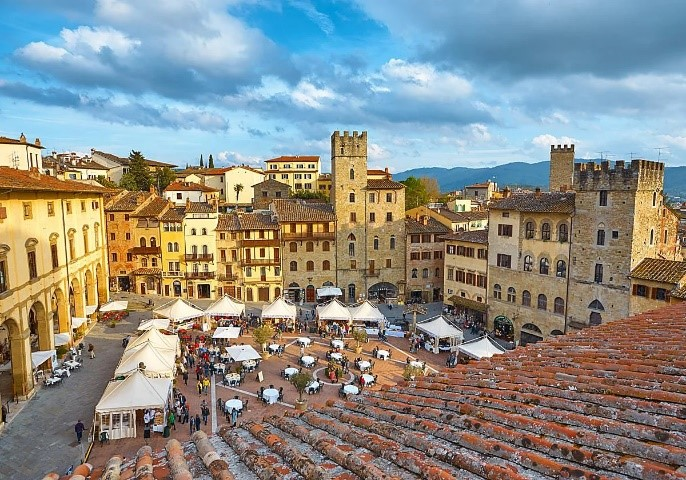

Arezzo
Arezzo is a historic hilltop city in southeastern Tuscany, Italy, known for its Etruscan origins, medieval architecture, and Renaissance art. Once a powerful Etruscan and later Roman center, it today combines deep artistic heritage with a vibrant local culture, making it one of Tuscany’s most characterful provincial capitals.
Key Facts:
- Region: Tuscany, Italy
- Founded: 9th century B.C. (Etruscan Aritim)
- Elevation: 296 m (971 ft) above sea level
- Population: ≈ 100,000 (2024 est.)
- Notable natives: Giorgio Vasari, Francesco Petrarca (Petrarch), Guido d’Arezzo
Historical background
Arezzo was among the twelve major Etruscan cities and later flourished under Rome as a center for fine ceramics and metallurgy. During the Middle Ages it became an independent commune aligned with the Ghibellines until conquered by Florence in 1384. The Medici integrated it into their Grand Duchy, leaving fortifications such as the pentagonal Fortezza Medicea.

Viareggio
Viareggio is a coastal city in Tuscany, Italy, on the Tyrrhenian Sea. Known for its long sandy beaches, Liberty-style architecture, and world-famous Carnival, it is one of the main seaside resorts of northern Tuscany and part of the Versilia region’s cultural and tourism hub.
Key Facts:
- Region: Tuscany, Italy
- Province: Lucca
- Founded: Late 12th century
- Population: ~62,000 (2023 est.)
- Notable Event: Carnival of Viareggio
History and development
Originally a medieval port of Lucca, Viareggio grew into a maritime and shipbuilding center by the 16th century. In the 19th century, it transformed into a fashionable seaside resort, attracting Italian nobility and artists. The city was heavily damaged during World War II but rebuilt with characteristic pastel-colored facades and modernist touches.

Spoleto
Spoleto is a historic hill town in central Italy’s Umbria region, renowned for its layered Roman, Lombard, and medieval heritage and its annual performing-arts festival. Perched above the Umbrian Valley about 120 km north of Rome, it blends ancient monuments, Renaissance art, and lively contemporary culture within a compact, walkable center.
Key Facts:
- Region: Umbria, Province of Perugia
- Founded: Roman colony in 241 BCE
- Population: ~36,000 (2024)
- Elevation: 396 m (1,299 ft)
- UNESCO site: Basilica di San Salvatore (2011)
- Festival: Festival dei Due Mondi (1958-present)
Historical background
Originally a settlement of the Umbri, Spoleto—then Spoletium—became a Roman colony along the Via Flaminia. Its fortified position helped repel Hannibal in 217 BCE. After Rome’s fall, it served as the Lombard capital of the Duchy of Spoleto (6th–8th centuries), later passing to the Papal States and then joining unified Italy in 1860. The city’s long continuity is visible in surviving Umbrian walls, Roman arches, and medieval churches.

Sanremo
Sanremo is a coastal city in Liguria, northwestern Italy, known for its mild climate, tourism, and cultural events. Nestled on the Italian Riviera near the French border, it is a popular resort destination and a symbol of Italian musical and floral tradition.
Key Facts:
- Region: Liguria, Italy
- Population: Approximately 53,000 (2023)
- Founded: Ancient Roman period (as Viilla Matutia)
- Known for: Sanremo Music Festival, Casino di Sanremo, flower cultivation
- Location: 55 km northeast of Nice, 25 km from the French border
History and setting
Sanremo’s origins date back to the Roman settlement Villa Matutia, later evolving into a medieval town named after Saint Romulus. Its advantageous coastal location fostered maritime trade and tourism. During the 19th century, Sanremo became a favored winter retreat for European aristocracy and Russian nobility.